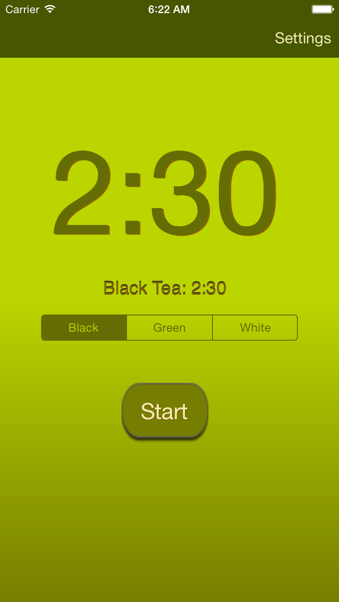
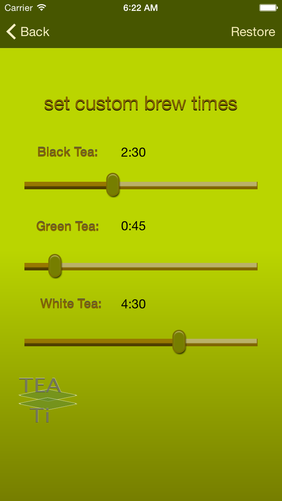

TeaTi
- Press start to begin the brew timer
- Press "Settings" in the upper right hand corner of the main screen
- Move slider knobs to desired brew time
- Press "Back" in the upper left hand corner of the "Settings" screen.
To set custom timers for your tea:
For TeaTi support, email teati@downtowndistro.com